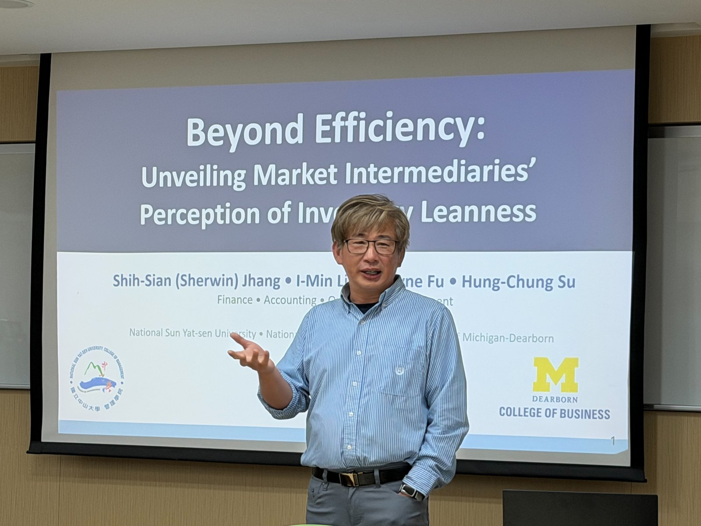

Wayne Fu
MBA, PhD
Associate Professor of Decision Sciences
Dept. of Information and Operations Management
College of Business · University of Michigan-Dearborn

I am an Associate Professor of Decision Sciences at the University of Michigan-Dearborn College of Business in the Department of Information and Operations Management.
I received my Ph.D. in Operations Management from the Georgia Institute of Technology, advised by Ravi Subramanian and Atalay Atasu. I also hold an M.Eng. in Manufacturing from the University of Michigan, Ann Arbor and an MBA from the University of Warwick, England.
Before returning to academia, I spent over a decade in industry — as a consultant and solution manager at i2 Technologies (now Blue Yonder) across Dallas and Tokyo, and as Director of Product Management at Servigistics (acquired by PTC) in Atlanta. This practical experience in supply chain management directly shapes my research and teaching interests.
My research centers on operational strategies that shape firms' environmental and sustainability performance — particularly how information dissemination, transparency, and supply chain decisions influence outcomes. My work spans Corporate Social Responsibility, Modeling and Optimization, and Sustainable Operations, drawing on empirical methods grounded in archival data.
Here, I maintain two journals tracking current developments in the areas I follow closely — one on Aftermarket Dynamics (warranty design, right to repair, reverse logistics, and circular economy) and one on Chemical Use & Disclosure in business. These are informal, updated periodically, and open to anyone interested in following along.
Feel free to reach out if you'd like to discuss research, collaborate, or explore questions in sustainable operations and supply chain.
Honorable Mention — JOM Jack Meredith Best Paper Award
Best Researcher — College of Business, UM-Dearborn
Honorable Mention — M&SOM Award for Responsible Research in Operations Management
Best Consultant — i2 Technologies